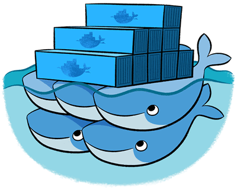

Teile und Herrsche
Verteilte Java-Anwendungen mit Docker


 Teile und Herrsche von Benjamin Schmid, Dr. Ralph Guderlei ist lizenziert unter einer Creative Commons-Lizenz (by-nc-sa). Beruht Reveal.JS.
Teile und Herrsche von Benjamin Schmid, Dr. Ralph Guderlei ist lizenziert unter einer Creative Commons-Lizenz (by-nc-sa). Beruht Reveal.JS.
150 Mio. USD Risikokapital

Hype?
oder
»The next big thing«?
Jump into Docker: Live Demo
$ mvn -o package
$ java -jar target/rest-microservice-1.0.0.jar server
$ sensible-browser "http://localhost:8080/hello-world"
$ docker build -t my/microservice .
$ docker run -d --name web1 my/microservice
$ docker run -d --name web2 my/microservice
$ docker run -d --name web3 my/microservice
$ docker pull haproxy:1.5
$ docker run -d --name balancer \
--link web1:web1 --link web2:web2 --link web3:web3 \
-p 8080:80 \
-v (pwd)/etc:/usr/local/etc/haproxy:ro \
haproxy:1.5
$ sensible-browser "http://localhost:8080/hello-world"
Inhaltsverzeichnis
Docker in a nutshell
-
Isolierte Prozessausführung (Sandbox)
auf Basis von »Linux Containers (LXC)« - Wesentlich effizienter als VMs/Hypervisoren
- Portables Format für Container mit Versionierung
- Leichtgewichtige Laufzeit- und Packaging-Tools
- Cloud-Repository für Container-Vorlagen
Grundlegende Begriffe
Image: Paketierte Zusammenstellung von Dateien. Damit eine schreibgeschützte Blaupause für eine Systemumgebung.
Container: Eine unabhängige Systemumgebung basierend auf einem Image
Repository: Ein Sammlung von Images auf dem lokalen Docker oder zentralen Registry Server
Docker Komponenten


Erstellen von Images
1. **Manuell:** *Commit* eines Containers 2. **Automatisiert:** via `Dockerfile`
In der Regel: Automatisiert, aufbauend auf einem via `docker pull` bezogenem Base-Image
Base Images
Images bauen: Dockerfile
FROM java:8
MAINTAINER Inspector Gadget
# Kommando im Container ausführen
RUN apt-get update && apt-get dist-upgrade -y && \
apt-get clean && rm -rf /var/lib/apt/lists/* /tmp/* /var/tmp/*
# JAR und Config-File in Image aufnehmen
WORKDIR /opt
ADD target/rest-microservice-1.0.0.jar app.jar
ADD src/main/resources/example.yml app.yml
# announce exported port 8080 and 8081
EXPOSE 8080 8081
# Wichtig: Separate Volumes für Daten
VOLUME ["/srv/"]
# JAR ausführen beim Start des Containers
ENTRYPOINT java -jar app.jar server
Hands on Docker
Docker advanced

Layers & Union File System
Data Volumes
Datenhaltung unabhängig vom Container-Lebenszyklus.
Überlebt: Löschen & Updates.
Erlaubt: Sharing.
Container verknüpfen
Einstiegs-Demo revisited
docker build -t my/microservice
docker run -d --name web1 my/microservice
docker run -d --name web2 my/microservice
docker run -d --name web3 my/microservice
docker run -d --name balancer \
--link web1:web1 --link web2:web2 --link web3:web3 \
-p 8080:80 \
-v (pwd)/etc:/usr/local/etc/haproxy:ro \
haproxy:1.5Docker Kommandos
Docker & Java
Anwendungsfälle
Best Practices
für Docker Images
Docker Distributed
Orchestrierung - Docker Compose
haproxy:
image: haproxy:1.5
ports:
- 8080:80
volumes:
- ./etc/haproxy.cfg:/usr/local/etc/haproxy/haproxy.cfg
links:
- web1
- web2
- web3
web1:
image: exxcellent/docker_talk
Cluster-Betrieb
- Verteilung & Scheduling
- Service Discovery
- Load Balancing
Tools

Beispiel - verteiltes System

Hype vs. Potential
Docker & Windows
Status
von Docker
- nur Teil einer Gesamtlösung
- Dynamisches Umfeld
- 1.x-Technologie & Folgeprobleme
- Unklare Ausrichtung
➱ Rocket, Open Container, LXD
Fragen,
die sich durch Docker ergeben
- Nachvollziehbarkeit
& Delivery Model - Datenhaltung
- Zuständigkeiten
- Security (root, Patches)
Potential Docker
Automatisierung Provisioning, Config, Delivery
Immutability
Umgebung = Code. Disposable
Serverkonsolidierung
System-agnostisch
Deployment
Einfach; Container als Einheit